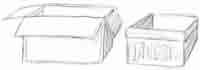

Something You Can Do
Each day you can do something special. You don’t have to be big, or rich, or super smart. You can do it right at home, at school, work, or play. Do it for your father, mother, brothers or sisters. You only need two strong hands and a willing attitude. Do you know what it is?
It is being a Servant—the kind that makes life better and easier for everyone else. Just like Jesus, who always gave a smile and held out His hands to help. Don’t you think that when He was little, Jesus was a willing helper in His home? Yes!
Here is an idea to help you get started in being ready-to-serve:
My Trusty Work Box
- Gather: First find a small box that is sturdy enough to carry things. A shoe box is a good size. The other things you will need are: scissors, glue, rope or ribbon for handles, colored paper to decorate it, and some tall cans or containers for organizing things.
- Make it: First cut off any box flaps. Punch holes in the sides for two handles, far enough down to be stong. Now tie on the ribbon or rope so that it just right for carrying. For the inside, ask someone big to help you hot glue a couple containers down the middle. Do your best now—you want your work box to look nice and be easy to use.
-
Decorate: On the outside of your work box glue down the paper and put any designs you want. Maybe some caterpillars will help you remember the lesson on faithful work. Or write down a Bible verse about serving others. The one in “Gems for your Treasure Chest” is a good worker’s motto.

- Fill it: Your work box is now going to be your trusty friend. What should you put in it? First figure out what chores you have to do each day and write them down carefully. This is your “to do” list. Next see what you will need to do these jobs. A duster? Some garbage bags? An apron, or cleaning cloth? Mom or Dad might have some ideas. Keep your work box tidy, with the smaller things kept in the containers.
- Use it! When you have to clean your room, take along your work box. Tuck in two plastic bags—one for trash, another for dirty clothes. That will make the cleaning go faster. Or, if you need to weed outside, tuck in your trowel and work gloves. Memory verse cards are fun to have along; practice your Bible verses while you work. Be responsible and don’t leave your work box out in other people’s way. Most of all remember that a willing spirit counts for everything. Be a servant for Jesus!